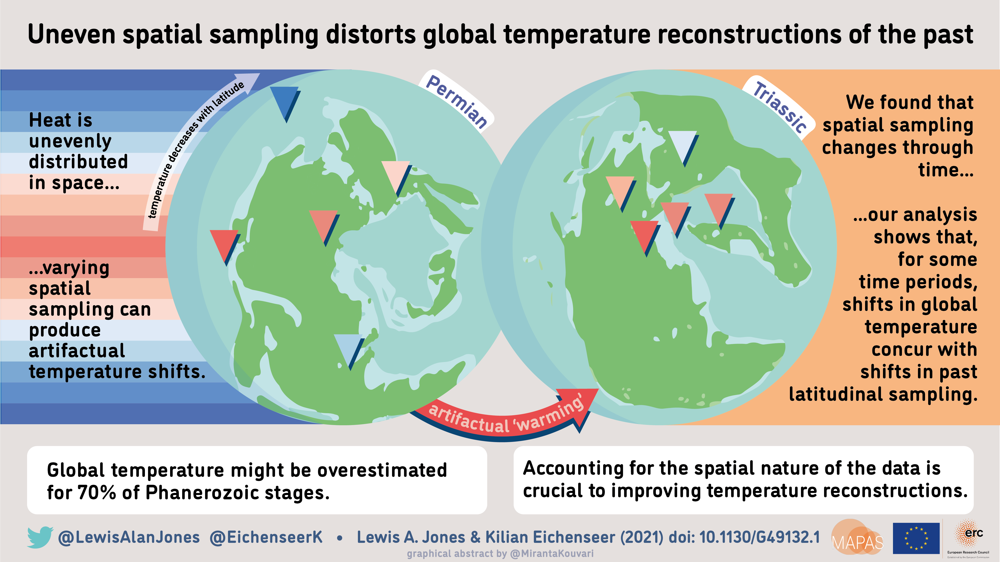

Kilian Eichenseer and I had a new paper out this week looking at uneven spatial sampling in the isotope record of δ18O. For this blog post, I’ve put together a brief summary of why we decided to investigate this, and our findings.
Human activity is rapidly altering Earth’s climate system, pushing it towards an historically unprecedented warm state. Over the next century, global warming is expected to have dramatic consequences for Earth’s biodiversity and human livelihood. While no historical analogue of projected global warming exists, Earth’s geological record provides a vast archive of past climate change, spanning hundreds of millions of years. This archive documents a wide range of global cooling and warming events, and their effect on ecosystems, providing critical context for understanding past, current, and future climate change.
As Earth’s climate cannot be directly measured for the geological past, researchers rely on proxies of temperature to reconstruct past climates. The most common proxy used to reconstruct temperature comes from measurements of the ratio of stable isotopes 18O and 16O (δ18O). These measurements are generally taken from the shells of fossil organisms composed of calcium carbonate (CaCO3), such as foraminifera, brachiopods, bivalves, and belemnites. From the δ18O measurements of the shell, the temperature of the surrounding water, at the time of shell formation, can be calculated. Currently, measurements of δ18O provide the most comprehensive record of past temperature for the Phanerozoic, a time period covering the last 541 million years. However, the geological record is incomplete, with the availability of fossils to sample varying through time and space. This is problematic as temperature decreases from the equator to polar regions, forming a latitudinal temperature gradient. Consequently, incomplete, and variable sampling of this gradient through time can lead to misleading reconstructions of past global temperatures.
In our recent study, we tested the impact of the changing distribution of sampling on reconstructions of past global temperature. We show that global temperature might be overestimated in 70% of intervals of the Phanerozoic. We also find that observed changes in climate, for some intervals, concur with changes in the distribution of sampling. For example, when sampling shifts from low to high latitudes, such as in the Late Cretaceous, a cooling trend is generated. Conversely, when sampling shifts from high to low latitudes, for example in the Late Devonian, a warming trend is generated. These results suggest that observed fluctuations in global temperature might be artifactually induced for some intervals, masking the real trend. We also find that climatic perturbations might be underestimated at certain points in the Phanerozoic. For example, a classical cooling trend observed in the Ordovician might be underestimated due to an equatorward shift in sampling. Overall, our findings suggest that while proxy records are vital for reconstructing Earth’s past temperature, accounting for the spatial nature of these data is crucial to improving these reconstructions.

Lewis A. Jones and Kilian Eichenseer. (2021) Uneven spatial sampling distorts reconstructions of Phanerozoic seawater temperature. Geology. View here.